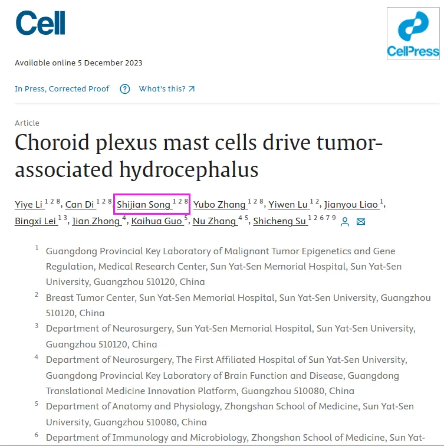
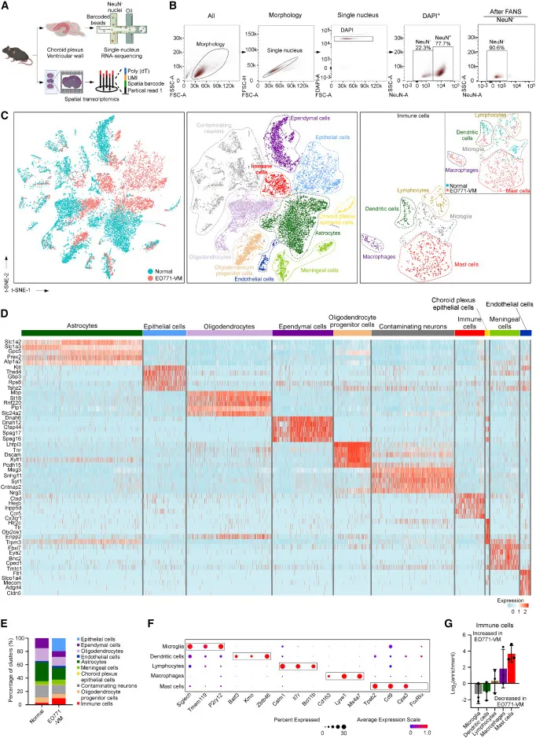
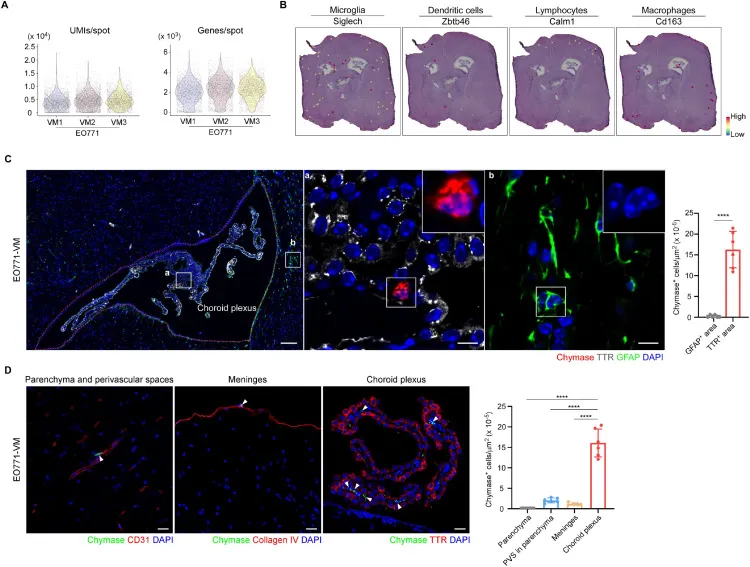
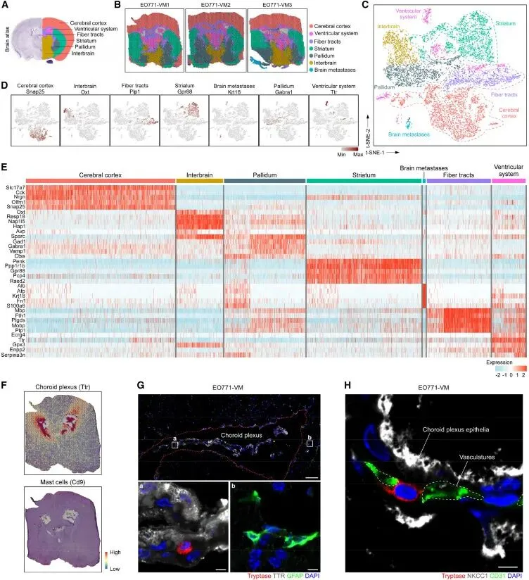

宋尔卫院士的儿子以共一身份发表《Cell》！
原文：https://mp.weixin.qq.com/s?__biz=MzAwMzIzOTk5OQ==&mid=2247506223&idx=1&sn=3afb714446e63df5f2f2acff2b0f375e&chksm=9b3ca07fac4b296938175bd1ceffb7a9d6b09848e5ebc01d3f9cceb6a141a58ecb8717da07d9#rd 合集：文献速递 / 漫谈胡侃
如题，我们熟知的宋院士(一个R语言统计例题)虎父无犬子，其子(目前为中山二院乳腺外科二年级硕士研究生1，年轻有为 )以共一第三的作者身份在顶刊《Cell》上发表题为"Choroid plexus mast cells drive tumor-associated hydrocephalus "[2]的研究性论文。该文利用目前应用火热的单细胞核转录组测序与空间转录组学揭示了一种在肿瘤相关性脑积水中急剧增加的肥大细胞。并发现BMS-262084作为类胰蛋白酶抑制剂，可在脉络丛类器官模型中穿过血脑屏障，并进一步在体内抑制肿瘤相关性脑积水的发生，从而减轻肥大细胞诱导的上皮纤毛损伤。总的来说，作者为肿瘤相关性脑积水提供了一种新兴治疗方法，为该领域做出突出贡献。
)以共一第三的作者身份在顶刊《Cell》上发表题为"Choroid plexus mast cells drive tumor-associated hydrocephalus "[2]的研究性论文。该文利用目前应用火热的单细胞核转录组测序与空间转录组学揭示了一种在肿瘤相关性脑积水中急剧增加的肥大细胞。并发现BMS-262084作为类胰蛋白酶抑制剂，可在脉络丛类器官模型中穿过血脑屏障，并进一步在体内抑制肿瘤相关性脑积水的发生，从而减轻肥大细胞诱导的上皮纤毛损伤。总的来说，作者为肿瘤相关性脑积水提供了一种新兴治疗方法，为该领域做出突出贡献。
){kind=link}




参考：
如何联系我们

 公众号后台消息更新不及时，超过48h便不许回复读者消息，这里给大家留一下领取资料及免费服务器(生信分析为什么要使用服务器？)的微信号 ，方便各位随时交流、提建议（科研任务繁重，回复不及时请见谅）。此外呼声一直很高的交流群 也建好了，欢迎大家入群讨论：
公众号后台消息更新不及时，超过48h便不许回复读者消息，这里给大家留一下领取资料及免费服务器(生信分析为什么要使用服务器？)的微信号 ，方便各位随时交流、提建议（科研任务繁重，回复不及时请见谅）。此外呼声一直很高的交流群 也建好了，欢迎大家入群讨论：
大家可以阅读完这几篇之后添加给生信入门初学者的小贴士 如何搜索公众号过往发布内容

 您点的每个赞和在看，我都认真当成了喜欢
您点的每个赞和在看，我都认真当成了喜欢